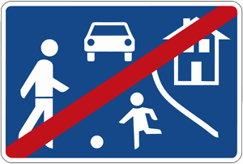

Zeichen 325.2
Ende eines verkehrsberuhigten Bereichs

40 Tatbestände dazu
110112Sie fuhren aus einem verkehrsberuhigten Bereich (Zeichen 325.1, 325.2) auf die Straße und gefährdeten +) dadurch Andere.
30 €
110113
Sie fuhren aus einem verkehrsberuhigten Bereich (Zeichen 325.1, 325.2) auf die Straße. Es kam zum Unfall.
35 €
110154
Sie fuhren von einem verkehrsberuhigten Bereich (Zeichen 325.1, 325.2) auf die Straße, ohne den Fahrtrichtungsanzeiger zu benutzen.
10 €
142000
Sie behinderten +) als Fußgänger in einem verkehrsberuhigten Bereich (Zeichen 325.1, 325.2) unnötig den Fahrverkehr.
5 €
142103
Sie parkten in einem verkehrsberuhigten Bereich (Zeichen 325.1, 325.2) verbotswidrig außerhalb der zum Parken gekennzeichneten Flächen.
10 €
142104
Sie parkten in einem verkehrsberuhigten Bereich (Zeichen 325.1, 325.2) verbotswidrig außerhalb der zum Parken gekennzeichneten Flächen und behinderten +) dadurch Andere.
15 €
142106
Sie parkten in einem verkehrsberuhigten Bereich (Zeichen 325.1, 325.2) verbotswidrig außerhalb der zum Parken gekennzeichneten Flächen länger als 3 Stunden.
20 €
142107
Sie parkten in einem verkehrsberuhigten Bereich (Zeichen 325.1, 325.2) verbotswidrig außerhalb der zum Parken gekennzeichneten Flächen länger als 3 Stunden und behinderten +) dadurch Andere.
30 €
142109
Sie hielten als Fahrzeugführer in einem verkehrsberuhigten Bereich (Zeichen 325.1, 325.2) die Schrittgeschwindigkeit nicht ein.
15 €
142110
Sie behinderten +) als Fahrzeugführer in einem verkehrsberuhigten Bereich (Zeichen 325.1, 325.2) einen Fußgänger.
15 €
142118
Sie überschritten die zulässige Höchstgeschwindigkeit innerhalb geschlossener Ortschaften um (0 - 10) km/h in einem verkehrsberuhigten Bereich (Zeichen 325.1, 325.2). Zulässige Geschwindigkeit: ... km/h. Festgestellte Geschwindigkeit (nach Toleranzabzug): ... km/h.
40 €(Lkw usw.)
142130
Sie überschritten die zulässige Höchstgeschwindigkeit innerhalb geschlossener Ortschaften um (0 - 10) km/h in einem verkehrsberuhigten Bereich (Zeichen 325.1, 325.2). Zulässige Geschwindigkeit: ... km/h. Festgestellte Geschwindigkeit (nach Toleranzabzug): ... km/h.
30 €(andere Kfz)
142131
Sie überschritten die zulässige Höchstgeschwindigkeit innerhalb geschlossener Ortschaften um (11 - 15) km/h in einem verkehrsberuhigten Bereich (Zeichen 325.1, 325.2). Zulässige Geschwindigkeit: ... km/h. Festgestellte Geschwindigkeit (nach Toleranzabzug): ... km/h.
50 €(andere Kfz)
142600
Sie gefährdeten +) als Fahrzeugführer in einem verkehrsberuhigten Bereich (Zeichen 325.1, 325.2) einen Fußgänger.
60 €1 PunktB-Verstoß
142601
Sie gefährdeten +) als Fahrzeugführer in einem verkehrsberuhigten Bereich (Zeichen 325.1, 325.2) einen Fußgänger. Es kam zum Unfall.
75 €1 PunktB-Verstoß
142605
Sie überschritten die zulässige Höchstgeschwindigkeit innerhalb geschlossener Ortschaften um (11 - 15) km/h in einem verkehrsberuhigten Bereich (Zeichen 325.1, 325.2). Zulässige Geschwindigkeit: ... km/h. Festgestellte Geschwindigkeit (nach Toleranzabzug): ... km/h.
60 €(Lkw usw.)
142606
Sie überschritten die zulässige Höchstgeschwindigkeit innerhalb geschlossener Ortschaften um (16 - 20) km/h in einem verkehrsberuhigten Bereich (Zeichen 325.1, 325.2). Zulässige Geschwindigkeit: ... km/h. Festgestellte Geschwindigkeit (nach Toleranzabzug): ... km/h.
160 €1 PunktA-Verstoß(Lkw usw.)
142607
Sie überschritten die zulässige Höchstgeschwindigkeit innerhalb geschlossener Ortschaften um (21 - 25) km/h in einem verkehrsberuhigten Bereich (Zeichen 325.1, 325.2). Zulässige Geschwindigkeit: ... km/h. Festgestellte Geschwindigkeit (nach Toleranzabzug): ... km/h.
175 €1 PunktA-Verstoß(Lkw usw.)
142608
Sie überschritten die zulässige Höchstgeschwindigkeit innerhalb geschlossener Ortschaften um (26 - 30) km/h in einem verkehrsberuhigten Bereich (Zeichen 325.1, 325.2). Zulässige Geschwindigkeit: ... km/h. Festgestellte Geschwindigkeit (nach Toleranzabzug): ... km/h.
235 €2 PunkteFahrverbot 1 Monat(e)A-Verstoß(Lkw usw.)
142609
Sie überschritten die zulässige Höchstgeschwindigkeit innerhalb geschlossener Ortschaften um (31 - 40) km/h in einem verkehrsberuhigten Bereich (Zeichen 325.1, 325.2). Zulässige Geschwindigkeit: ... km/h. Festgestellte Geschwindigkeit (nach Toleranzabzug): ... km/h.
340 €2 PunkteFahrverbot 1 Monat(e)A-Verstoß(Lkw usw.)
142610
Sie überschritten die zulässige Höchstgeschwindigkeit innerhalb geschlossener Ortschaften um (41 - 50) km/h in einem verkehrsberuhigten Bereich (Zeichen 325.1, 325.2). Zulässige Geschwindigkeit: ... km/h. Festgestellte Geschwindigkeit (nach Toleranzabzug): ... km/h.
560 €2 PunkteFahrverbot 2 Monat(e)A-Verstoß(Lkw usw.)
142611
Sie überschritten die zulässige Höchstgeschwindigkeit innerhalb geschlossener Ortschaften um (51 - 60) km/h in einem verkehrsberuhigten Bereich (Zeichen 325.1, 325.2). Zulässige Geschwindigkeit: ... km/h. Festgestellte Geschwindigkeit (nach Toleranzabzug): ... km/h.
700 €2 PunkteFahrverbot 3 Monat(e)A-Verstoß(Lkw usw.)
142612
Sie überschritten die zulässige Höchstgeschwindigkeit innerhalb geschlossener Ortschaften um (61 - ∞) km/h in einem verkehrsberuhigten Bereich (Zeichen 325.1, 325.2). Zulässige Geschwindigkeit: ... km/h. Festgestellte Geschwindigkeit (nach Toleranzabzug): ... km/h.
800 €2 PunkteFahrverbot 3 Monat(e)A-Verstoß(Lkw usw.)
142616
Sie überschritten die zulässige Höchstgeschwindigkeit innerhalb geschlossener Ortschaften um (0 - 10) km/h in einem verkehrsberuhigten Bereich (Zeichen 325.1, 325.2). Zulässige Geschwindigkeit: ... km/h. Festgestellte Geschwindigkeit (nach Toleranzabzug): ... km/h.
70 €(gef. Güter usw.)
142617
Sie überschritten die zulässige Höchstgeschwindigkeit innerhalb geschlossener Ortschaften um (11 - 15) km/h in einem verkehrsberuhigten Bereich (Zeichen 325.1, 325.2). Zulässige Geschwindigkeit: ... km/h. Festgestellte Geschwindigkeit (nach Toleranzabzug): ... km/h.
120 €1 PunktA-Verstoß(gef. Güter usw.)
142618
Sie überschritten die zulässige Höchstgeschwindigkeit innerhalb geschlossener Ortschaften um (16 - 20) km/h in einem verkehrsberuhigten Bereich (Zeichen 325.1, 325.2). Zulässige Geschwindigkeit: ... km/h. Festgestellte Geschwindigkeit (nach Toleranzabzug): ... km/h.
320 €1 PunktA-Verstoß(gef. Güter usw.)
142619
Sie überschritten die zulässige Höchstgeschwindigkeit innerhalb geschlossener Ortschaften um (21 - 25) km/h in einem verkehrsberuhigten Bereich (Zeichen 325.1, 325.2). Zulässige Geschwindigkeit: ... km/h. Festgestellte Geschwindigkeit (nach Toleranzabzug): ... km/h.
360 €2 PunkteFahrverbot 1 Monat(e)A-Verstoß(gef. Güter usw.)
142620
Sie überschritten die zulässige Höchstgeschwindigkeit innerhalb geschlossener Ortschaften um (26 - 30) km/h in einem verkehrsberuhigten Bereich (Zeichen 325.1, 325.2). Zulässige Geschwindigkeit: ... km/h. Festgestellte Geschwindigkeit (nach Toleranzabzug): ... km/h.
480 €2 PunkteFahrverbot 1 Monat(e)A-Verstoß(gef. Güter usw.)
142621
Sie überschritten die zulässige Höchstgeschwindigkeit innerhalb geschlossener Ortschaften um (31 - 40) km/h in einem verkehrsberuhigten Bereich (Zeichen 325.1, 325.2). Zulässige Geschwindigkeit: ... km/h. Festgestellte Geschwindigkeit (nach Toleranzabzug): ... km/h.
640 €2 PunkteFahrverbot 2 Monat(e)A-Verstoß(gef. Güter usw.)
142622
Sie überschritten die zulässige Höchstgeschwindigkeit innerhalb geschlossener Ortschaften um (41 - 50) km/h in einem verkehrsberuhigten Bereich (Zeichen 325.1, 325.2). Zulässige Geschwindigkeit: ... km/h. Festgestellte Geschwindigkeit (nach Toleranzabzug): ... km/h.
800 €2 PunkteFahrverbot 3 Monat(e)A-Verstoß(gef. Güter usw.)
142623
Sie überschritten die zulässige Höchstgeschwindigkeit innerhalb geschlossener Ortschaften um (51 - 60) km/h in einem verkehrsberuhigten Bereich (Zeichen 325.1, 325.2). Zulässige Geschwindigkeit: ... km/h. Festgestellte Geschwindigkeit (nach Toleranzabzug): ... km/h.
900 €2 PunkteFahrverbot 3 Monat(e)A-Verstoß(gef. Güter usw.)
142624
Sie überschritten die zulässige Höchstgeschwindigkeit innerhalb geschlossener Ortschaften um (61 - ∞) km/h in einem verkehrsberuhigten Bereich (Zeichen 325.1, 325.2). Zulässige Geschwindigkeit: ... km/h. Festgestellte Geschwindigkeit (nach Toleranzabzug): ... km/h.
950 €2 PunkteFahrverbot 3 Monat(e)A-Verstoß(gef. Güter usw.)
142629
Sie überschritten die zulässige Höchstgeschwindigkeit innerhalb geschlossener Ortschaften um (16 - 20) km/h in einem verkehrsberuhigten Bereich (Zeichen 325.1, 325.2). Zulässige Geschwindigkeit: ... km/h. Festgestellte Geschwindigkeit (nach Toleranzabzug): ... km/h.
70 €(andere Kfz)
142630
Sie überschritten die zulässige Höchstgeschwindigkeit innerhalb geschlossener Ortschaften um (21 - 25) km/h in einem verkehrsberuhigten Bereich (Zeichen 325.1, 325.2). Zulässige Geschwindigkeit: ... km/h. Festgestellte Geschwindigkeit (nach Toleranzabzug): ... km/h.
115 €1 PunktA-Verstoß(andere Kfz)
142631
Sie überschritten die zulässige Höchstgeschwindigkeit innerhalb geschlossener Ortschaften um (26 - 30) km/h in einem verkehrsberuhigten Bereich (Zeichen 325.1, 325.2). Zulässige Geschwindigkeit: ... km/h. Festgestellte Geschwindigkeit (nach Toleranzabzug): ... km/h.
180 €1 PunktA-Verstoß(andere Kfz)
142632
Sie überschritten die zulässige Höchstgeschwindigkeit innerhalb geschlossener Ortschaften um (31 - 40) km/h in einem verkehrsberuhigten Bereich (Zeichen 325.1, 325.2). Zulässige Geschwindigkeit: ... km/h. Festgestellte Geschwindigkeit (nach Toleranzabzug): ... km/h.
260 €2 PunkteFahrverbot 1 Monat(e)A-Verstoß(andere Kfz)
142633
Sie überschritten die zulässige Höchstgeschwindigkeit innerhalb geschlossener Ortschaften um (41 - 50) km/h in einem verkehrsberuhigten Bereich (Zeichen 325.1, 325.2). Zulässige Geschwindigkeit: ... km/h. Festgestellte Geschwindigkeit (nach Toleranzabzug): ... km/h.
400 €2 PunkteFahrverbot 1 Monat(e)A-Verstoß(andere Kfz)
142634
Sie überschritten die zulässige Höchstgeschwindigkeit innerhalb geschlossener Ortschaften um (51 - 60) km/h in einem verkehrsberuhigten Bereich (Zeichen 325.1, 325.2). Zulässige Geschwindigkeit: ... km/h. Festgestellte Geschwindigkeit (nach Toleranzabzug): ... km/h.
560 €2 PunkteFahrverbot 2 Monat(e)A-Verstoß(andere Kfz)
142635
Sie überschritten die zulässige Höchstgeschwindigkeit innerhalb geschlossener Ortschaften um (61 - 70) km/h in einem verkehrsberuhigten Bereich (Zeichen 325.1, 325.2). Zulässige Geschwindigkeit: ... km/h. Festgestellte Geschwindigkeit (nach Toleranzabzug): ... km/h.
700 €2 PunkteFahrverbot 3 Monat(e)A-Verstoß(andere Kfz)
142636
Sie überschritten die zulässige Höchstgeschwindigkeit innerhalb geschlossener Ortschaften um (71 - ∞) km/h in einem verkehrsberuhigten Bereich (Zeichen 325.1, 325.2). Zulässige Geschwindigkeit: ... km/h. Festgestellte Geschwindigkeit (nach Toleranzabzug): ... km/h.
800 €2 PunkteFahrverbot 3 Monat(e)A-Verstoß(andere Kfz)